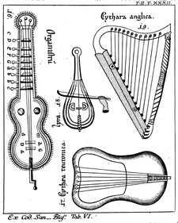

Music in the Middle Ages (roughly from the 9th to 13th centuries) could be broadly divided into religious and secular music. Religious music was the main stream of medieval music, but it was unaccompanied vocal music represented by Gregorian chant. In secular music, on the other hand, instruments were used, and the general public enjoyed singing and dancing. Therefore, the most important role of the hurdy-gurdy was its function in secular music.During the 13th century the instrument was completely altered into a much smaller, portable device known as a a hurdy-gurdy. During the 13th century the instrument was completely altered into a much smaller. [Baines2001]

Baines, F., Bowles, E., & Green, R. Hurdy-gurdy. Grove Music Online. Retrieved 5 Sep. 2022, from https://www-oxfordmusiconline-com.utokyo.idm.oclc.org/grovemusic/view/10.1093/gmo/9781561592630.001.0001/omo-9781561592630-e-0000013583.
Gerbert, Martin(1774). De cantu et musica sacra a prima ecclesiae aetate usque ad praesens tempus.p.152 from https://books.google.co.jp/books?id=wDZPAAAAcAAJ&hl=ja&pg=RA1-PA152#v=onepage&q&f=false